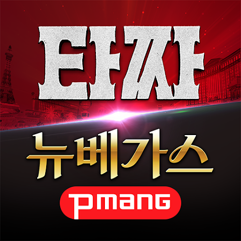
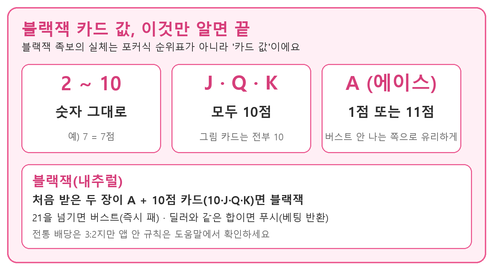
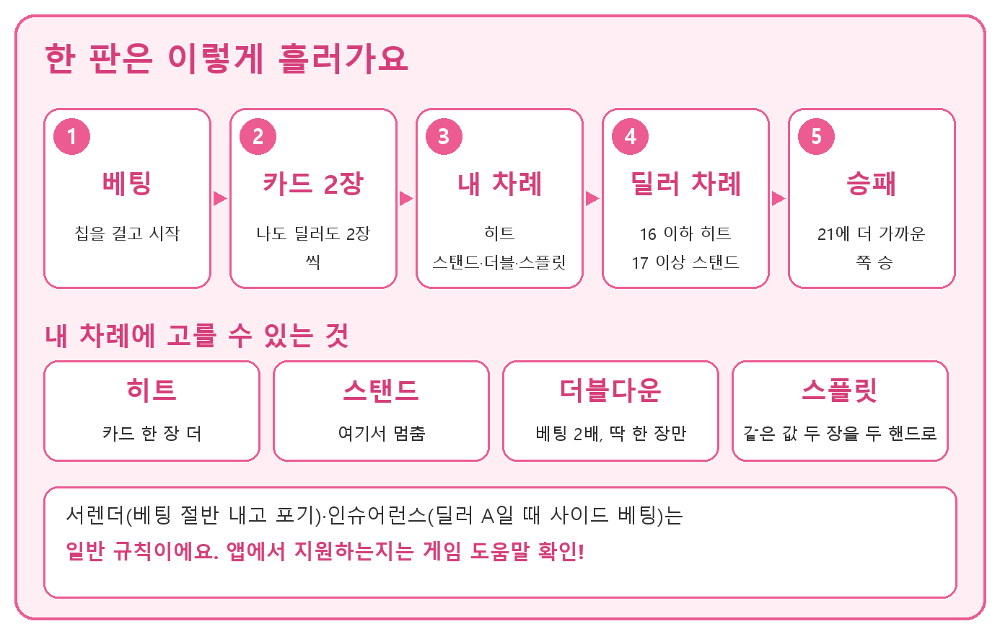
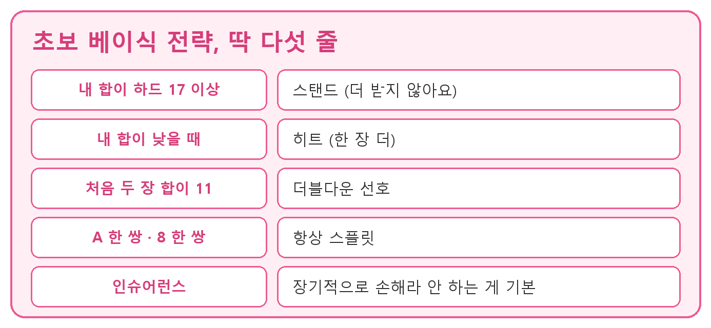
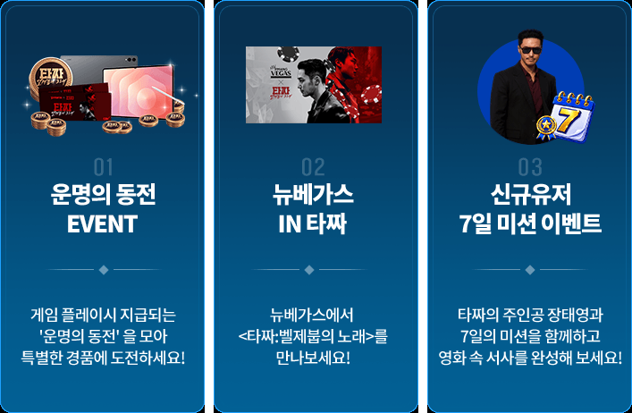

피망뉴베가스 블랙잭 족보 정리, 카드 값부터 히트 스탠드 더블다운 그리고 타짜4 콜라보 이벤트까지
이 게임은 확률형 아이템을 포함하고 있습니다.
영화 '타짜: 벨제붑의 노래' 콜라보 소식을 챙기다가 피망 뉴베가스를 다시 살펴봤는데요, 슬롯·바카라·블랙잭이 한 앱에 같이 들어 있다 보니 '블랙잭 족보'부터 정리해 두면 훨씬 편하겠더라고요. 그래서 오늘은 앱 소개, 블랙잭의 카드 값과 승패 규칙, 지금 챙길 수 있는 타짜4 이벤트와 라스베가스 여행권까지 한 번에 풀어볼게요.
아래 블랙잭 규칙은 일반 규칙 기준이라서 앱 안의 세부 규칙과는 다를 수 있습니다. 서렌더·인슈어런스 지원 여부, 앱 안 배당, 소프트 17 처리는 게임 도움말에서 한 번에 확인해 두시면 편해요.
피망 뉴베가스, 어떤 앱인지부터 짚어볼게요
피망 뉴베가스는 네오위즈가 서비스하는 슬롯·바카라·블랙잭 통합 카지노 시뮬레이션 앱이고, 구글 플레이 기준 다운로드 100만 이상, 평점 4.4를 기록 중이에요. 게임을 바꿀 때마다 앱을 따로 깔 필요가 없다는 점이 제일 먼저 마음에 들더라고요.

콜라보 기간에는 앱 아이콘도 타짜 디자인으로 바뀌어 있어요.
이미지 출처: 구글 플레이 피망 뉴베가스 · 네이버 본문엔 받아서 재업로드 권장
특장점은 이렇게 세 가지로 정리돼요.
- 슬롯·바카라·블랙잭 3종을 한 앱에서 즐길 수 있어요.
- 강원도 인기 슬롯으로 알려진 KL Saberi의 '부채춤77'을 독점 제공한다고 구글 플레이 설명에 적혀 있고, 레벨이 오르면 신규 슬롯이 열려요. 광고주 안내에는 '노인과 보물' 같은 슬롯도 함께 소개돼 있어요.
- 광고주 안내에서는 UI가 직관적이고 게임 설명이 자세하다고 소개해요. 처음 접하는 분께 정말 부담이 적은지는 직접 들어가서 확인해 보고 싶은 부분이에요.
개인적으로는 규칙이 단순한 블랙잭부터 가볍게 익혀 보고 싶다는 기대가 생기더라고요. 타짜 스킨 인트로도 궁금하네요~
로비에서 세 게임이 한눈에 보이는 화면으로 넣어주세요.
블랙잭 족보, 사실은 카드 값이에요
블랙잭은 카드 합이 21을 넘지 않으면서 딜러보다 21에 가까우면 이기는 게임이고, 처음 받은 두 장이 A와 10점 카드면 블랙잭이에요. 포커처럼 족보 순위표가 있는 게 아니라 '카드 값'과 '승패 규칙'이 곧 족보인 셈이라, 이것만 익히면 반은 끝난 거예요.

카드 값만 알면 합계 계산은 어렵지 않아요.
도해: 봄딩 제작 · 규칙 출처: 위키백과 블랙잭 · Bicycle
| 카드 | 점수 | 참고 |
|---|---|---|
| 2~10 | 숫자 그대로 | 7이면 7점 |
| J·Q·K | 10점 | 그림 카드는 전부 10 |
| A | 1점 또는 11점 | 버스트가 안 나는 쪽으로 유리하게 계산 |
합이 21을 넘으면 버스트라서 그 자리에서 지고, 딜러와 합이 같으면 푸시로 베팅이 그대로 돌아와요. A를 11로 센 합은 '소프트', 1로 센 합은 '하드'라고 부르는데요, 소프트 합은 카드를 더 받아도 바로 터지지 않거든요. 블랙잭의 전통 배당은 3:2입니다.
히트·스탠드·더블다운·스플릿, 언제 고를까요
히트는 카드를 한 장 더 받는 것, 스탠드는 그대로 멈추는 것, 더블다운은 베팅을 두 배로 늘리고 딱 한 장만 받는 것, 스플릿은 같은 값 두 장을 두 핸드로 나누는 것이에요.

내 차례에는 이 네 가지 중에서 고르면 돼요.
도해: 봄딩 제작 · 규칙 출처: Wikipedia Blackjack · Bicycle
- 히트: 합이 낮아서 더 받아도 터질 걱정이 적을 때 선택해요.
- 스탠드: 합이 충분히 높다 싶으면 멈추고 딜러 차례를 기다려요.
- 더블다운: 합이 좋을 때 베팅을 늘려 한 장으로 승부를 보는 방식이에요.
- 스플릿: 같은 값 두 장이 나왔을 때 두 핸드로 갈라서 진행해요.
여기에 서렌더(베팅 절반을 내고 포기)와 인슈어런스(딜러 첫 카드가 A일 때 거는 사이드 베팅)도 있는데, 이 둘은 일반 규칙이라 앱에서 지원하는지는 따로 봐야 합니다.
딜러는 정해진 규칙대로만 움직여요
딜러는 합이 16 이하면 반드시 히트하고 17 이상이면 스탠드해요. 딜러는 더블다운·스플릿·서렌더를 못 하고, 소프트 17 처리는 게임마다 다르죠. 딜러는 고민 없이 정해진 대로만 움직이니까, 내가 터지지만 않으면 딜러가 터지기를 기다리는 전략도 성립해요.
초보라면 이 정도만 기억해 두세요
베이식 전략의 요점은 하드 17 이상이면 스탠드, 11이면 보통 더블다운을 선호, A와 8은 항상 스플릿, 인슈어런스는 하지 않는 거예요. 위키백과와 Bicycle 안내를 기준으로 정리한 내용이고, 딜러의 첫 카드와 내 합을 비교하는 조견표가 정석이지만 덱 수나 소프트 17 처리 같은 규칙에 따라 세부 칸이 달라져서 오늘은 큰 줄기만 담았습니다.

큰 줄기만 알아도 훨씬 덜 헷갈려요.
도해: 봄딩 제작 · 규칙 출처: Wikipedia Blackjack · Bicycle
어떤 전략이든 결과를 보장하지는 않으니 가볍게 즐기는 오락으로 접근하시길 권해요.
타짜4 콜라보 이벤트 3종과 라스베가스 여행권
공식 이벤트 페이지 기준 게임 속 타짜 이벤트는 '운명의 동전 EVENT', '뉴베가스 IN 타짜', '신규유저 7일 미션' 세 가지이고, 라스베가스 여행권 응모는 웹 이벤트 페이지에서 이벤트 코인으로 해요. 코인과 동전이 어떤 관계인지는 아래 FAQ에 정리했어요.
영화 개봉 기념으로 대형 콜라보가 진행 중이에요.
이미지 출처: 구글 플레이 피망 뉴베가스 · 네이버 본문엔 받아서 재업로드 권장
| 공식 이벤트명 | 공식 안내 | 광고주 안내 기준 |
|---|---|---|
| 운명의 동전 EVENT | 게임 플레이로 받는 '운명의 동전'을 모아 특별 경품에 도전 | '악마의 판' 9/22~10/27, 판수·베팅 조건 충족 시 동전 지급, 갤럭시 탭S11·콜라보 장패드 등 추첨 |
| 뉴베가스 IN 타짜 | 뉴베가스에서 타짜: 벨제붑의 노래를 만나는 이벤트 | '타짜 리스킨' 8/25~12/31, 인트로·카드 뒷면에 타짜4 스킨 적용 |
| 신규유저 7일 미션 | 7일의 미션을 함께하며 영화 속 서사를 완성 | '타짜 NR 7일 미션' 8/25~12/27, 가입 7일 이내 신규 유저 대상 단계별 미션 |
광고주 안내 이름과 공식 이벤트명의 대응은 확인되지 않아 내용이 비슷한 것끼리 나란히 놓았어요. 세부 조건은 앱 이벤트 화면에서 확인하세요.

이벤트 페이지에서 소개하는 세 가지 이벤트 이미지예요.
이미지 출처: 타짜: 벨제붑의 노래 X 피망 이벤트 페이지 · 네이버 본문엔 받아서 재업로드 권장
광고주 안내 기준으로 라스베가스 2인 여행권이 경품으로 소개돼서 눈길이 가는데요, 이벤트 페이지 문구에서는 인원 표기를 찾지 못했어요. 이벤트 페이지에 따르면 여행권은 하나투어 상품권으로 지급되고, 다른 경품에 한 번 이상 응모하면 자동 응모돼요. 이벤트 기간은 9월 22일부터 10월 27일까지이고, 당첨자 발표는 11월 12일(목)입니다. 이벤트 코인은 피망 5종 게임에 접속해서 쌓는 방식이고 경품 응모는 웹 페이지에서 해요. 게임 결과로 경품이 나가는 구조는 아니라서, 인원·항공·숙박 같은 세부 내용은 이벤트 페이지를 참고하세요.
시작하기 전에 확인할 것
피망 뉴베가스는 구글 플레이에서 무료로 받을 수 있고, 스토어 고지대로 만 19세 이상 전용 오락 목적 시뮬레이션이라 실제 금전 도박 기능은 없고, 경품도 이벤트 코인 응모로만 받아요. 게임 승패로 현금이나 현물이 나가지는 않습니다.
자주 묻는 질문
Q. 블랙잭에서 A는 꼭 11점으로 세야 하나요?
꼭 그런 건 아니에요. A는 1점 또는 11점 중에서 합이 21을 넘지 않는 쪽으로 유리하게 계산하고, 카드를 더 받다가 터질 것 같으면 1점으로 바뀌어요.
Q. 라스베가스 여행권은 어떻게 응모하나요?
게임에 접속해서 이벤트 Coin을 모은 뒤 웹 이벤트 페이지에서 원하는 경품에 응모하면 돼요. 여행권은 다른 경품에 한 번 이상 응모하면 자동으로 응모되는 방식으로 안내돼요.
Q. 이벤트 코인은 게임에서 이겨야 받나요?
공식 페이지는 접속하면 매일 10 Coin이 쌓인다고 안내하고, 광고주 안내 기준으로는 판수·베팅 조건 충족 시에도 운명의 동전이 지급된다고 하는데 두 안내의 관계는 확인되지 않았어요. 앱 이벤트 화면에서 확인하세요.
Q. 이벤트 코인은 언제까지 쓸 수 있나요?
10월 27일까지 사용할 수 있고 이후에는 소멸되거든요.
정리하면 피망 뉴베가스는 한 앱에서 슬롯·바카라·블랙잭을 다 둘러볼 수 있고, 콜라보 이벤트 덕분에 지금 들어가 볼 이유도 충분한 앱이라고 느꼈습니다.
이런 분께 잘 맞을 것 같아요. 블랙잭 규칙을 처음부터 정리해 보고 싶은 분, 타짜4 콜라보가 궁금해서 들어가 보려는 분, 슬롯·바카라·블랙잭을 한 앱에서 가볍게 오가고 싶은 분이라면 부담 없이 시작하기 좋아 보여요. 10월 27일 이벤트 마감 전에 한 번 둘러보시면 좋겠네요.
이 게임은 확률형 아이템 포함 게임이며 만 19세 이상만 이용할 수 있어요.
참고한 곳 (2026.10.19 기준)
· 구글 플레이 피망 뉴베가스
· 앱스토어 피망 뉴베가스
· 타짜: 벨제붑의 노래 X 피망 이벤트 페이지
· 위키백과 블랙잭
· Bicycle 블랙잭 규칙
✔ 피망뉴베가스 같이 보기 좋은 내용
· 타짜4 X 피망뉴베가스 바카라 하는 법
· 피망뉴베가스 동양 전설을 모티브로 한 슬롯게임
· 피망뉴베가스 카지노게임, 부담 없이 즐기는 이유